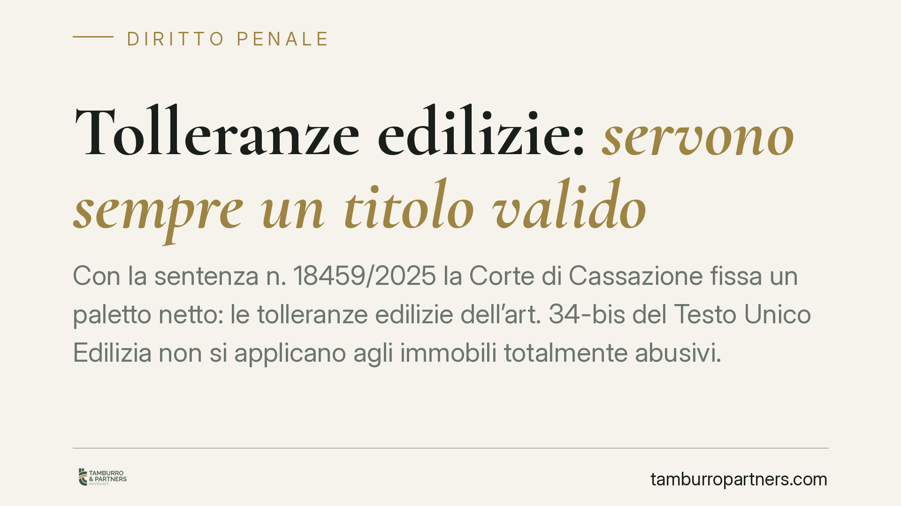

Tolleranze edilizie: servono sempre un titolo valido
Con la sentenza n. 18459/2025 la Corte di Cassazione fissa un paletto netto: le tolleranze edilizie dell'art. 34-bis del Testo Unico Edilizia non si applicano agli immobili totalmente abusivi. Dove manca un titolo abilitativo valido a monte, non c'è margine di tolleranza che tenga e l'opera conserva piena rilevanza penale. Un chiarimento che pesa su proprietari e tecnici.

Il fatto
La Corte di Cassazione, con la sentenza n. 18459/2025, torna sul concetto di "tolleranza edilizia" introdotto dall'art. 34-bis del D.P.R. 380/2001 (Testo Unico dell'Edilizia) e ritoccato dal cosiddetto Decreto Salva Casa (D.L. 69/2024).
Il principio affermato è lineare: la tolleranza presuppone sempre un titolo abilitativo valido. Non è uno strumento per sanare ciò che non è mai stato legittimato. Dove l'immobile è integralmente abusivo, cioè realizzato senza alcun titolo, non esiste un parametro rispetto al quale misurare lo scostamento "tollerabile". E se non c'è tolleranza, l'abuso resta penalmente rilevante.
Inquadramento normativo
L'art. 34-bis del Testo Unico Edilizia distingue due figure. Le tolleranze costruttive riguardano il mancato rispetto dell'altezza, dei distacchi, della cubatura, della superficie coperta e di ogni altro parametro, entro il limite del 2% delle misure previste nel titolo abilitativo. Le tolleranze esecutive riguardano invece le irregolarità geometriche, le modifiche minori di finitura e la diversa collocazione di impianti e opere interne, purché realizzate durante i lavori per l'attuazione di un titolo.
Il punto decisivo è proprio questo: entrambe le categorie si definiscono per differenza rispetto a un titolo. Il 2% si calcola sulle misure "previste nel titolo abilitativo"; le tolleranze esecutive presuppongono lavori svolti "in attuazione" di un permesso o di una SCIA. Senza quel punto di riferimento, la norma non ha un oggetto su cui operare.
Il Decreto Salva Casa ha ampliato alcune maglie e introdotto un regime temporale per le tolleranze esecutive, ma non ha mutato questo presupposto logico-giuridico. La Cassazione lo ribadisce: la liberalizzazione non si estende a chi ha costruito nel nulla amministrativo.
Perché la distinzione conta
La differenza tra "difformità tollerata" e "abuso integrale" non è formale. Nel primo caso l'opera è legittima e la tolleranza serve solo a evitare contenziosi su scostamenti millimetrici fisiologici del cantiere. Nel secondo caso l'opera è priva di titolo e integra, a seconda della tipologia, gli illeciti edilizi previsti dall'art. 44 del Testo Unico Edilizia, con conseguenze penali a carico del responsabile.
Chi confida nell'art. 34-bis per "regolarizzare" un fabbricato mai autorizzato parte quindi da un presupposto errato. La tolleranza non è una sanatoria e non produce gli effetti di un titolo in sanatoria (l'accertamento di conformità dell'art. 36). Sono istituti diversi, con presupposti diversi.
Implicazioni pratiche
Per il proprietario, la sentenza significa che una perizia che richiami genericamente le tolleranze edilizie non mette al riparo da responsabilità se l'immobile è privo di titolo originario. Prima di compravendite, mutui o ristrutturazioni, occorre verificare la legittimità urbanistica di partenza.
Per il tecnico abilitato, cresce l'esposizione professionale. Attestare come "tolleranza" ciò che è un abuso integrale può generare responsabilità, anche in sede di dichiarazioni asseverate. La corretta qualificazione dell'intervento diventa il primo filtro da applicare.
Cosa fare in concreto
- Verificare il titolo originario. Prima di invocare qualsiasi tolleranza, accertare che esista un permesso di costruire, una licenza o un titolo equipollente valido per l'immobile.
- Distinguere tolleranza e sanatoria. Non confondere l'art. 34-bis con l'accertamento di conformità dell'art. 36: hanno presupposti, procedure ed effetti diversi.
- Documentare lo scostamento. Per le tolleranze costruttive, calcolare e documentare il rispetto del limite del 2% rispetto alle misure del titolo.
- Richiedere una due diligence urbanistica prima di compravendite e finanziamenti, così da emergere eventuali abusi non coperti da alcuna tolleranza.
- Consultare un legale in caso di immobili con storia edilizia incerta, prima di depositare asseverazioni o avviare interventi.
La pronuncia conferma un orientamento di rigore: le semplificazioni introdotte negli ultimi anni non trasformano l'abuso in legittimità. La tolleranza resta un margine tecnico, non una via di uscita dall'illecito.
---
Contributo informativo a cura di Tamburro & Partners - Avv. Giuseppe Tamburro. Non costituisce parere legale.
Ogni condominio ha una storia a sé.
Se gestisci un'amministrazione e vuoi un confronto su una specifica questione condominiale, scrivi allo studio. Ti rispondiamo entro un giorno lavorativo.